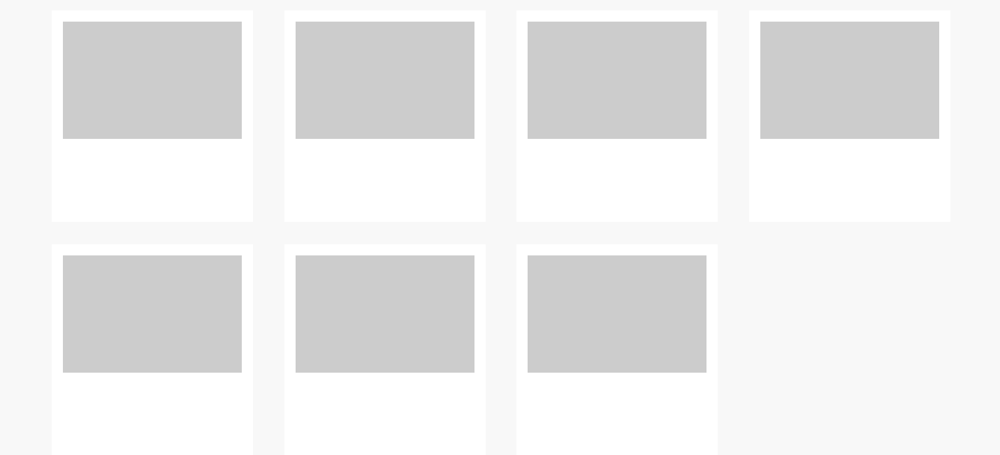
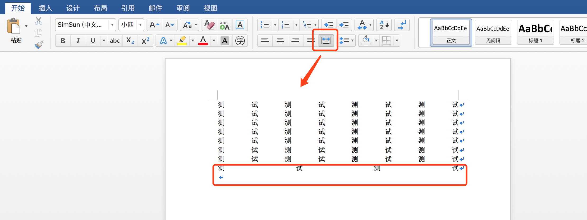
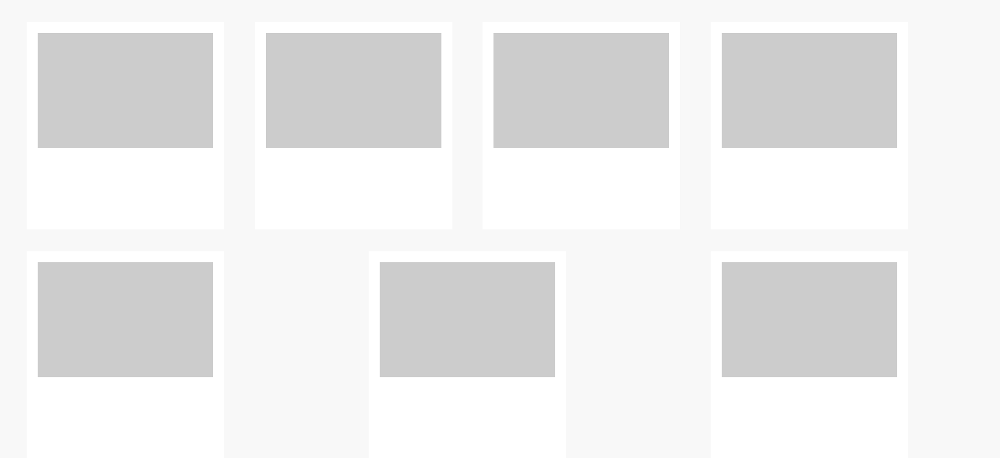

关于flex布局中的两端对齐均匀分布解决方案
2017-08-23 星期三 丁酉年 七月初二
【鸡年】戊申月 壬午日
宜：嫁娶 订盟 纳采 祭祀 斋醮
忌：出火 入宅 造屋 安门 安葬
近来做一个需求，设计图效果要求的是这样：

场景是：不使用js动态计算他的！！！
首先想到的是display: inline-block + margin-left: **px,但是首先这个屏宽不固定，那么怎么解决每行首列的margin-left: 0;这个问题，nth-of-type(**) **里是写不出自适应下选择器的
所以这个方法失败！！！
那么float也同理失败，是不能用的咯。
最后想了想flex布局，查找资料使用一下代码设置父容器就可以解决
display: flex;
flex-wrap: wrap;
justify-content: space-between;
display: flex: 使用flex布局，意为"弹性布局"
flex-wrap: wrap: 默认情况下，项目都排在一条线（又称"轴线"）上。flex-wrap属性定义，如果一条轴线排不下，如何换行。他可以取三个值.
nowrap: 默认不换行
wrap: 换行，第一行在上方
wrap-reverse: 换行，第一行在下方
justify-content: space-between: 两端对齐均匀分布，自动分配中间间距
好了，大家是不是觉得可以嗨皮的玩耍了，解决问题了？貌似确实是的啊。
那咱们来看下word文档中的两端对齐


看看最后一行，是不是和我们想象的不一样，但这又确实是两端对齐，自动分配间距啊。那么怎么解决最后一行不足列数时从左边排列，而且还自动空隙呢？
想办法，查资料，还是没有完美解决方案，最后都想着换方案，或者用js来计算了，最后灵机一动，不就是在最后一行，差几个元素补上几个空白元素么。
那么接下来就是怎么在自适应下知道差了几个，思虑再三css还真没办法知道最后一行差几个了，那么我无论差多少个，我都放上7，8ge够多了吧，每个高度设置为0，宽度设置为元素等宽；
<div class="item clearfix-item"></div>
<div class="item clearfix-item"></div>
<div class="item clearfix-item"></div>
<div class="item clearfix-item"></div>
<div class="item clearfix-item"></div>
<div class="item clearfix-item"></div>
<div class="item clearfix-item"></div>
<div class="item clearfix-item"></div>
.clearfix-item {
width: 288px;
height: 0px;
visibility: hidden;
margin: 0;
padding: 0;
}
原理就是：足够多的已经补上了最后一行缺失的元素，多下来的高度为0又看不见，那么就解决了嘛，唯一缺点就是手动放了一堆空元素。但至少是解决了。

微信打賞

支付寶打賞